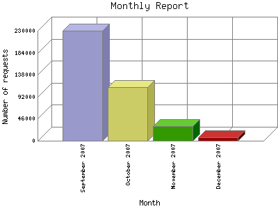

Analog 5.24
Analog 5.24 Report Magic for Analog 2.13
Report Magic for Analog 2.13The Monthly Report identifies activity for each month in the report
time frame. Remember that each page hit can result in several server requests
as the images for each page are loaded.
Note: Depending on the
report time frame, the first and last months may not represent a complete
month's worth of data, resulting in lower hits.

| Month | Number of requests | Percentage of the requests | |
|---|---|---|---|
| 1. | December 2007 | 6,814 | 1.80% |
| 2. | November 2007 | 30,223 | 7.99% |
| 3. | October 2007 | 112,077 | 29.60% |
| 4. | September 2007 | 229,441 | 60.61% |
Most active month September 2007 : 229,441 requests handled.
Monthly average: 94638 requests handled.
This report was generated on December 9, 2007 02:23.
Report time frame September 9, 2007 05:00 to December 9, 2007 05:55.
| Web statistics report produced by: | |
| Analog 5.24 | Report Magic for Analog 2.13 |